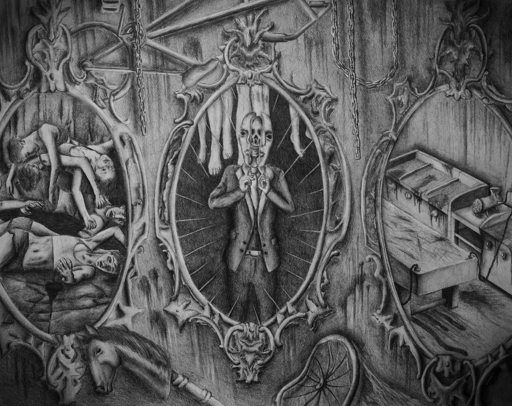

M I R R O R S
"The story of the man with high class remains an ominous mystery. The secret he hold lingers through the dark cracks of his home bringing chills up the spines of his victims. On the outside he appears to be a fine looking man, but through the mirror the devil inside him rises."

Below is the process to the drawing from transfer to rendering. The drawing took 3 weeks in a span of 3 months to draw out. The drawing was made for the RISD bike drawing that is required when applying to the Rhode Island School of Design.